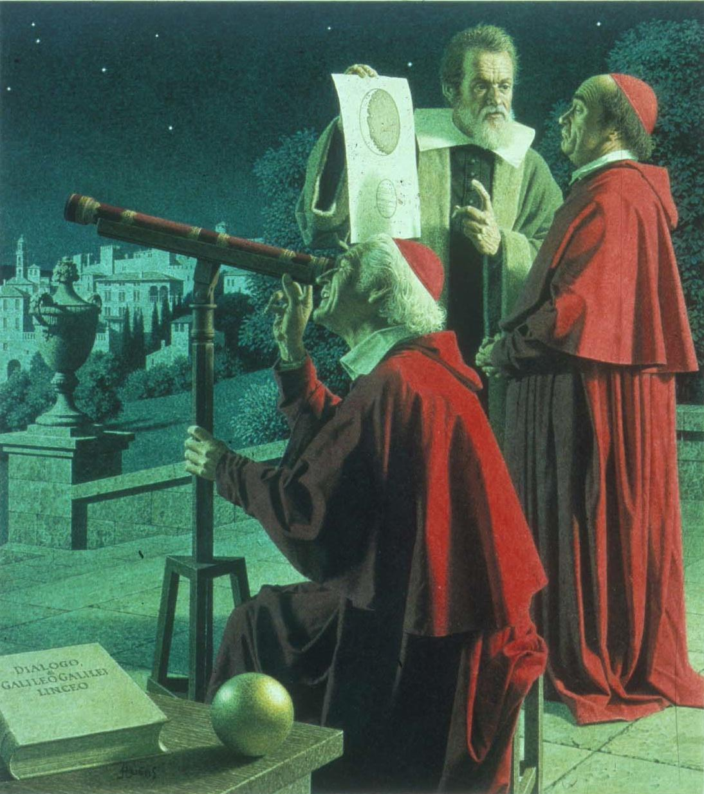
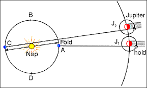
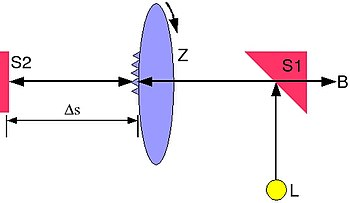
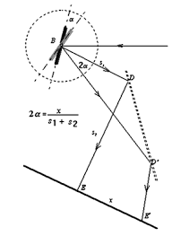
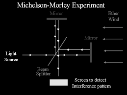

A fénysebesség mérését többen megkísérelték, egyik első közülük Galilei volt, aki két távoli hegycsúcson egy-egy lámpást helyezett el. A kísérletben először Galilei nyitotta ki lámpásának ablakát, és mikor a segítője a másik hegycsúcson megpillantotta a fényt, ő is kinyitotta a sajátját. Galilei a kísérletet különböző távolságokkal megismételte, de nem kapott eltérést, így rájött, hogy a mért idő jelentős részét az emberi reakcióidő teszi ki. Annyit megállapított, hogy a fény sebessége igen nagy. Mások úgy próbálták elvégezni a mérést, hogy egy éjszaka elsütött ágyú fényének egy távoli tükörről visszaverődését figyelték.
342 éve, 1676. december 7-én a dán Ole Rømer (Olaf Römer) a Jupiter holdjainak fogyatkozását vizsgálva észrevette, hogy az rendszeresen a vártnál kicsit előbb következik be, ha a Föld közelebb van a bolygóhoz, illetve később kerül rá sor, amikor a Föld távolabb van a Jupitertől. Römer ebből azt a következtetést vonta le, hogy a fénynek van sebessége, s a késés az az idő, amely a többlettávolság megtételéhez szükséges. A Föld-pálya hozzávetőleges ismeretében elvégezte a számítást, s mintegy 226 ezer kilométert kapott, ami igaz, hogy a valós értéknél mintegy 30 százalékkal kevesebb, de a fénysebesség felismerésében és első megmérésében tagadhatatlanul a dán kutatóé az érdem.
A fény sebességét 1849. július 23-án mérte meg először földi, laboratóriumi körülmények között a francia Hippolyte Fizeau. Az eljárás során a fénysugár egy fogaskerék fogai között haladt át, majd egy tükörről a nyolc kilométerre elhelyezett másik tükörre esett, onnan pedig vissza az eredeti fogaskerékre. Ha a kerék fordulatszámát jól állították be, ezen idő alatt egy fokot haladt előre és a fog miatt a fény nem látszott. A fordulatszám és a megtett távolság ismeretében számították ki a fénysebességet, amelyet durván 314 ezer kilométernek adódott másodpercenként.
1849-ben Fizeau fogaskerekes tárcsákkal megmérte a fény sebességét levegőben. Ez volt a fénysebesség első olyan mérése, amihez kizárólag a Földön telepített eszközöket használtak. Mivel a méréshez egy tükröt a mérőkészüléktől igen messze (a konkrét kísérletben 8633 m-re) kellett elhelyezni, a módszer eredeti, fogaskerekes formájával más közegekben (pl. vízben) nem lehetett a fénysebességét mérni.Ezért Foucault úgy finomította az eljárást, hogy a fogaskerekeket forgó tükrökkel váltotta fel. A visszaverő tükröt már elég volt néhány méternyire tenni a mérőkészüléktől, így a fénysebességet vízben (később más anyagokban) is megmérhették. Az 1851-ben Foucault által elvégzett mérések igazolták, hogy a fény sebessége bármely anyagban megegyezik a légüres térben mért fénysebesség és az illető anyag törésmutatójának a hányadosával.
Albert Michelson 1931-ben kidolgozott egy módszert a fénysebesség közvetlen mérésére oly módon, hogy megállapítja, mennyi ideig tart egy mért távolság elmozdulása . ... Ezután néhány kilométert tesz meg, majd visszatér, hogy a B arc tükrözze vissza. Amikor a prizma álló helyzetben van, a rés állóképe látható.Michelson egy általa tervezett műszer, interferométer segítségével bebizonyította, hogy a fény állandó sebességgel halad minden tehetetlenségi vonatkoztatási rendszerben, és lehetővé tette a távolságok nagyobb pontosságú mérését fényhullámok segítségével. ... Michelson 1931. május 9-én halt meg.
